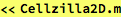
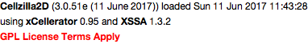
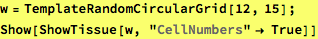
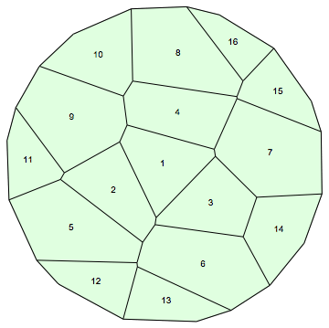
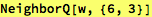
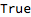
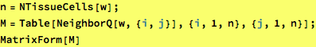
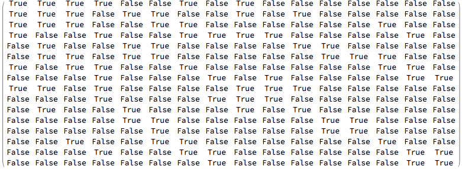

NeighborQ-example.nb
Example Cellzilla2D notebook.
GPL License applies.
See http://xlr8r.info and http://cellzilla.info for further details.


Determine (and display) all the midpoints of all edges in a particular cell on a template




Connection Matrix * using True/False instead of 1/0

